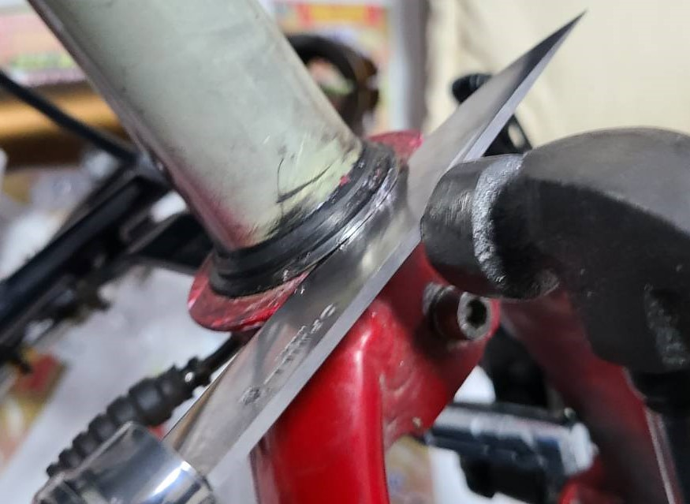
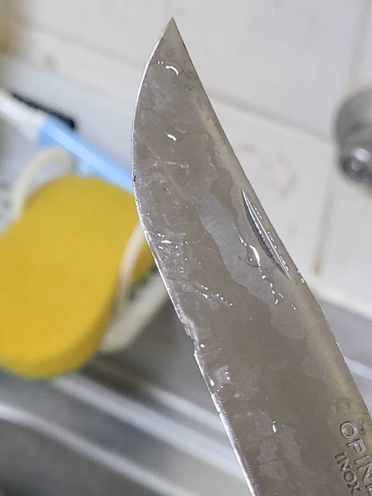

前回の後
気がついたら前回の記事を書いてから2ヶ月弱が過ぎてしまった。あれから無理やり10s化したDahon Speed P8（もはや8といっていいのか…）で、
沼津まで輪行して真城峠ー戸田へ(ぽんこつポン子という漫画の巡礼を兼ねて)ベンチマークをしにいった。
この時の実験では実用上は日帰りが限界かなという結論に至った。どうやら峠に行くとシフトメイトのボルトが緩んで変速が乱れやすくなるようだ。また、後日逆回転したらチェーンが切れた。これはあえて余裕をもたせたチェーン数にするためにつなぎ合わせたところが切れたのでそのせいだと思われる。結局6リング位切っても問題なさそうだった。
ハンドル周りカスタム

だいぶいろいろ変わったと思うのでとりあえずハンドル周りから。

まずは前回の記事でもちょっと写っていたスマホホルダー。Aliで買ったが結構良かった。
この機構のタイプはバイクでも使っていたので心配せずに買えた。重心も工夫されているのかスマホを刺していない状態だと緩やかにネジが締まる。


ボルトの締め調整は自分でやる必要があるがそれさえやれば縦横とフレキシブルに向きを変えられる。
個人的に全部のボルトがアーキレンチで調整できるようになっていたのは高評価ポイントであった。

更にAliで買った600円くらいのセンターバー。一応アマゾンでも売ってるが2000円くらいする。数百円なら納得のクオリティだがこれに2000円は出したくないな。

言わずとしれたノグから最近発売されたFrog v3のフロントライト。なぜかワイズロードのポイントが2500円分あったから買ってみた。TypeC充電に対応した常夜灯としてリムダイナモの代わりになるかな？と思ったがちょっと微妙だった。
今はリムダイナモを調整し直さないといけなくなって外しているがやはりBFL800をローモードで使うしかなさそうだ。
ヘッドセット交換
年始にヘッドセットを交換した。ど定番のLiteProをこれまたAliで注文。峠でキイキイ言うのがうるさかったので少しでも改善してくれればいいな。おそらく10年くらいパーツ交換されてないだろうからちょうどよかったと思う。

色は本体カラーに合わせてレッドを選択。同じ赤でも微妙に色合いが違うとダサくなるが割りと溶け込んでて満足。
ちなみに今回ヘッドワンリムーバーと圧入機はホームガーデンJPとかがAmazonで出品している激安セットにした。
届いてみればリムーバーはRisk製（中華おなじみ）だった。普通に圧入もできた。ちなみにレビューにあるように付属のレンチは使い物にならない。後日Aliでプラハンセットが2300円位で売ってたのを見かけたのでできるだけ安くしたい人はそれを買うのもありか。
ちなみに元からついていたクラウンレースはオピネルのナイフをハンマーで叩きつけて外した。

専用工具なんていらねえんだよ！

当然の帰結である。
チューブ周り

適当にボトルケージを生やしたり携帯ポンプをWestBikingのコンパクトなやつに変えた。
数回試用してみたが楽に最低空気圧入るので良さそうだ。問題はゴム蓋がちょっと外れやすいくらいだろうか。
あとはダイソーに売ってるチューブバッグにテムレスを入れて雨に備えたりした。
リアライト
結局ダイソーの単四電池式を取り付けた。シートポストに取り付けるマウントも付属していたがなんかサドルバッグにそのままつけることができた。


実はLEZYNEのオーソドックスなライトもつけてみたが無事紛失してしまった。ショックがでかすぎて100円以上出したくなくなった。
リアキャリア

リアキャリアに滑り止めをつけてみた。どれほど効果があるかは未測定。試したいが寒くて遠出する気になれない……。
ベダル周り

なんとなくペダルに反射板をつけてみた。ある方がデザインとして好み。

裾汚れが気になったので王道のドライブラインのチェーンリングを購入してみた。4000円くらいするけれどデザインと質感がいい。あと500円くらいだして赤黒のカラーリングにしとけばよかったなとケチった自分を恨んだ。

スタンドを両脚スタンドからギザプロダクツの24インチ用片脚に変えてみた。ハンドルを切る方向は気にしないといけないが、わりと安定感が増した。にしてもギザプロダクツはなんだかんだで初めて使う。
プーリー交換

思いつきでプーリーをベアリングにしてみた。

もうオイルで汚れてしまったがなんとなくガイドプーリーだけゲーミングプーリーに。悪趣味だなぁ。漕ぎ味は軽くなった……かもしれないが樹脂に比べていきなり壊れたりしないかは不安である。
終わり
こんな感じでとりあえず2ヶ月弱でいろいろいじったという報告でした。最近は生活リズムが変わったり寒さのせいであまり記事を書く気が起きないが、備忘録としてたまにまとめていきたい。ていうかでかけたときのこと書けよっっていう。

ではまた～